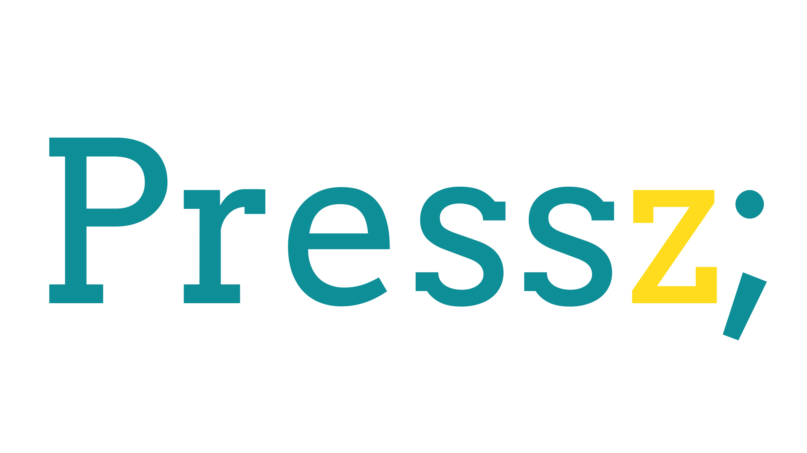
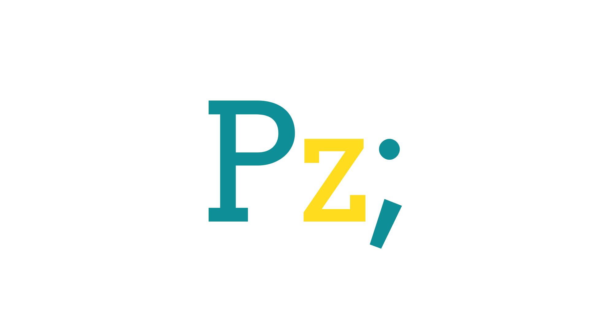

Name
The Pressez (Also known as: Pressz) is a combination of an English grammatical article and a French word.
Logo

Semicolon:
A punctuation mark (semicolon) is a terminal character mostly used in C-base programming languages. Here it represents programmers community and appreciates their work.
The semicolon tattoo also represents mental health struggles and the importance of suicide prevention.
Square type logo

Colors
We followed Gordarg Style Guide